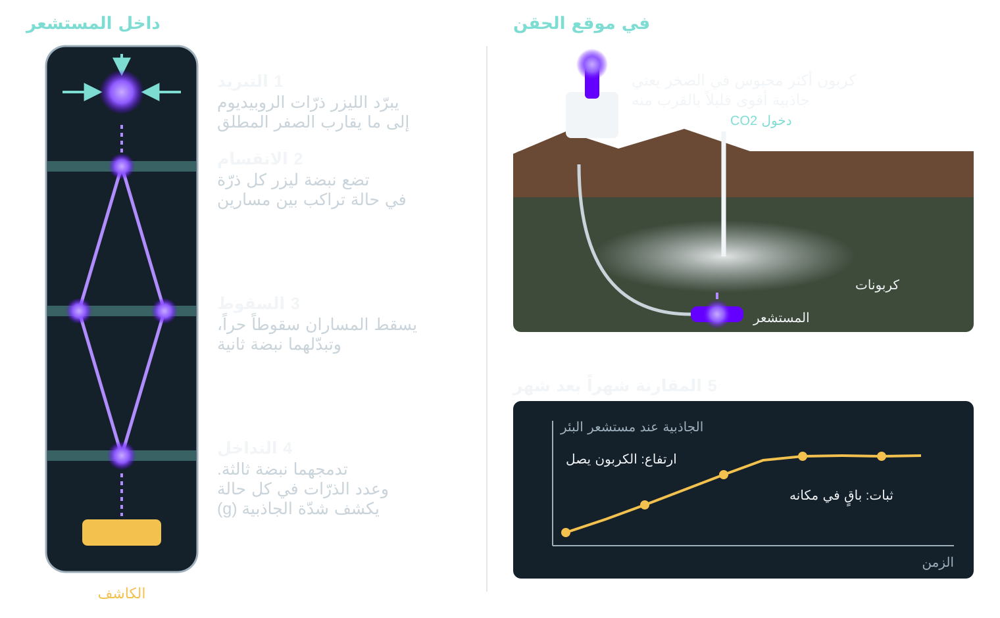
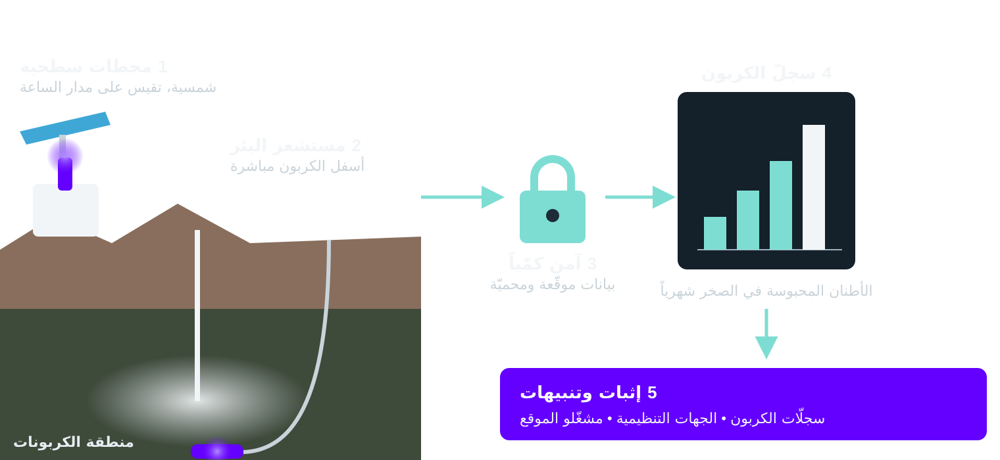

وزن الكربون بذرّات تسقط
كل طن من ثاني أكسيد الكربون يتحوّل إلى صخر يضيف كتلة تحت الأرض، والكتلة الإضافية تجذب بقوة أكبر قليلاً. ومقياس الجاذبية الكمّي قادر على الإحساس بهذا التغيّر الضئيل.
كيف يعمل مقياس التداخل الذرّي
لماذا تغيّر الكتلة الجاذبية
كل ما له كتلة يجذب كل ما سواه. الجبل يجذبك جذباً ضئيلاً جداً، وكذلك الكربون الذي يُضاف إلى الصخر تحته. ولكتلة متراصّة مقدارها M على مسافة r، تكون الجاذبية الإضافية:
حيث G ثابت الجذب العام (6.674 × 10⁻¹¹). وتبلغ الجاذبية على الأرض نحو 9.8 م/ث²، أي نحو 980 مليون ميكروغال. وسنة واحدة من الحقن في بئر واحدة في الفجيرة، أي 25,000 طن من ثاني أكسيد الكربون، تضيف نحو 17 ميكروغال عند مستشعر على بُعد 100 م: أي أقل من جزأين من مئة مليون من الجاذبية المعتادة.
تستطيع مقاييس الجاذبية الكمّية الميدانية اليوم تمييز نحو 5 ميكروغال في القياس الواحد، فهذه الإشارة تقارب ثلاثة أضعاف حدّها.

شبكة كيو-ميزان

مقياس جاذبية بالتداخل الذرّي
ذرّات روبيديوم مبرّدة بالليزر في حالة تراكب تعطي قراءات مطلقة للجاذبية لا تنحرف مع الزمن. يُستخدم في محطات سطحية تعمل بالطاقة الشمسية على مدار الساعة.
مستشعر كمّي نحيف للآبار
تضعف الجاذبية مع مربع المسافة، لذلك يرى مستشعر في بئر منحنية أسفل الكربون أكثر بكثير مما يراه مستشعر على قمة الجبل. وتصغير المستشعر ليناسب البئر هو تحدّي التصميم الرئيسي لدينا.
بيانات آمنة كمّياً
تُوقَّع القراءات برموز ما بعد الكمّ (الآمنة كمّياً)، فلا يمكن تزويرها حتى بحواسيب كمّية مستقبلية. وتوزيع المفاتيح الكمّي (QKD) ترقية مستقبلية.
ارتفاع، ثم ثبات
أثناء حقن ثاني أكسيد الكربون ترتفع الجاذبية عند مستشعر البئر شهراً بعد شهر. وعندما يتوقف الحقن يجب أن تبقى الجاذبية ثابتة: أي أن الكربون توقف عن الحركة. وإذا بدأت الجاذبية بالانخفاض، فهذا يعني أن جزءاً من الكتلة يتحرّك بعيداً، فيفحص الفريق آبار المراقبة.
تخبرنا الجاذبية أين توجد الكتلة وهل تتحرّك، وتؤكد كيمياء الماء من الآبار أنها أصبحت كربونات. ومعاً يعطيان إجابة كاملة.
شاهدها في المحاكاة